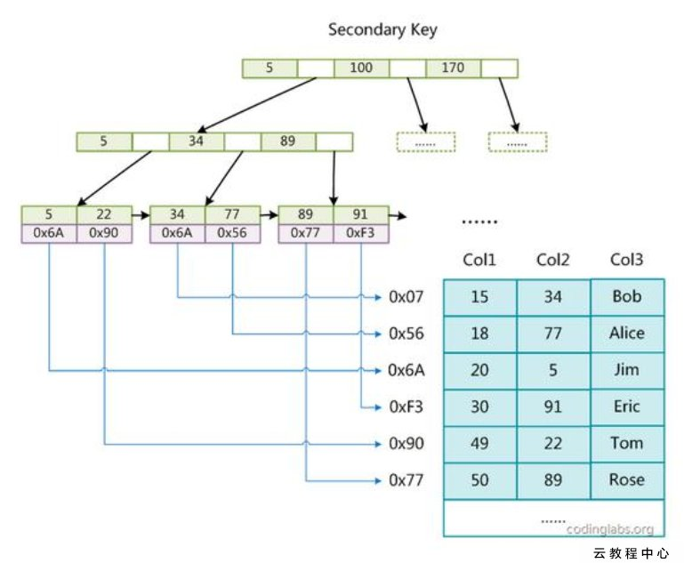

本文内容
1.count(*) 的实现方式
- MyISAM 直接存储了记录的总数，所以是 O(1) 的时间
- InnoDB 需要去读取叶子节点进行统计
- 由于 MVCC 所以不能简单的存储一个数字，因为是不确定的
- 普通索引的叶子节点较小，对于统计数据来说是优先的选择
- MyISAM 表虽然
count(*)很快，但是不支持事务；- show table status 命令虽然返回很快，但是不准确；
- InnoDB 表直接
count(*)会遍历全表，虽然结果准确，但会导致性能问题。
2.redoLog 和 binLog
- 更新记录时，先写 redo log，然后更新内存。在适当的时候将 redo log 所书写的更改写到磁盘里
- redo log 是 InnoDB 引擎的日志，bin log 是 MySQL 服务自带的日志（也就是说 bin log 一定会有，redo log 不一定会有）
- redo log 是物理日志，记录的是在某个数据页上做了什么修改；binlog 是逻辑日志，记录的是这个语句的原始逻辑，比如“给 ID=2 这一行的 c 字段加 1 ”。
- 写入的时候
- redo log prepare
- bin log
- redo log commit
- 如果在 bin log 写入之前崩溃了，事务就回滚了，如果写入 bin log 之后，redo log commit 之前崩溃了，再次启动时会自动 commit
3.索引
MyISAM 将所有的数据记录按照顺序堆放，想象成一个数组。
MyISAM 的索引记录的值是数据记录的地址，因此我们根据索引条件找到了记录地址后，还需要根据记录地址再去从数据记录里面找到其他需要的字段，这个过程称作回表。

也就是说 MyISAM 所有的索引都是非聚集索引
InnoDB
InnoDB 的数据文件并不是来一条就堆一条进去的，而是其自身就是一个索引文件。索引的 key 就是 ID、索引的值就是数据记录的其它字段。

这个就是 InnoDB 的聚集索引。
因此 InnoDB 必须有主键，如果没有主键，引擎会自己生成一个隐含字段的主键。
由于本身数据文件就是聚集索引，所以我们最好选择自增的主键，这样避免发生频繁的分页（B + 树随机插入的时候涉及到页的分裂，性能低）
InnoDB 的非聚集索引，索引项的值都是记录的 ID，因此涉及到其它非索引字段和主键 ID 的时候，也需要进行回表的操作。
由此可以得出：不建议使用过长的字段作为主键，因为所有的非聚集索引都要使用到主键作为索引项的值，过长的话导致空间开销大。
覆盖索引
如果执行的语句是 select ID from T where k between 3 and 5，这时只需要查 ID 的值，而 ID 的值已经在 k 索引树上了，因此可以直接提供查询结果，不需要回表。也就是说，在这个查询里面，索引 k 已经“覆盖了”我们的查询需求，我们称为覆盖索引。
也就是说 非聚集索引 并非是一定要有回表的，有的时候确实不需要其它字段了就不用回表了
最左前缀原则
联合索引 (A,B,C)，我们可以把 A 和 B 当做查询条件，也是可以走索引的，因为 A B 是 ABC 的左前缀。
能生效的根本原因在于索引的顺序是按照 ABC 的顺序来的，也就是先按照 A 再按照 B 再按照 C 排序，如果我们匹配 A 和 B 的话，它就可以先按照 A 进行查找，再按照 B 进行查找。
如果直接找 B 的话，是无法使用索引的，因为 B 并不是有序的
A 是绝对有序的，B 在某个相等的 A 的情况下是有序的，C 在某个相等的 AB 组合下是有序的
匹配列前缀
字符串字段其实也是类似的规则，字符串可以看做是字符的列表，其实也是按照最左边开始比较的。
因此我们的查询类似于 select name from t where name LIKE 'As%'; 这种是可以走索引的
由此有一种方案是：对于 name like '%As' 这种匹配结尾的查询，可以将 name 反向存储，然后就可以进行正向的查询了。
例如 domain like '%.com' 搜寻域名以 .com 结尾。这种查询是不能走字符串字段的索引的，我们可以保存一个字段叫做 reverse_domain ，然后查询 reverse_domain like 'moc.%' 这样就可以走索引了